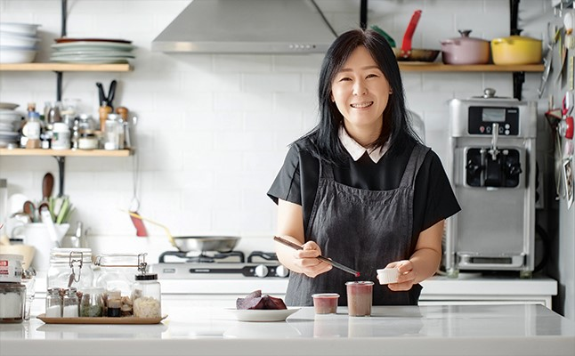

자연을 통째로 굽다
우리 땅에서 제철에 자란 재료만을 사용해 빵을 굽는 자연식 베이킹. 동물성 재료인 버터와 우유, 달걀은 사용하지 않고 백설탕과 백밀가루 또한 넣지 않아 더욱 건강하지요.자연식 베이킹 1세대, 전수미의 건강한 베이킹 이야기를 들어봅니다.

제가 하는 베이킹은 엄밀히 따지면 버터, 달걀, 우유를 사용하지 않는 비건(vegan, 엄격한 채식주의자) 베이킹 이에요. 굳이 자연식이라는 표현을 쓰는 이유는 제가 채식을 하는 사람이 아니기 때문이죠. 식단 구성에 있어서 채식을 지향하긴 하지만 100% 비건은 아니에요. ‘비건’이라는 단어 자체는 ‘채식을 하는 사람’이라는 뜻이 담겨 있는데, 제 베이킹을 ‘채식’에 한정시키고 싶진 않아요. 카페에 방문하는 손님 중 채식주의자가 아닌 분도 많죠. 건강한 재료로 건강하게 빵을 굽는 것이 모토예요. 때문에 채식보다는 자연식이란 단어가 더 어울리지 않나 싶 어요. 자연식 베이킹이 채식 베이킹을 포함한다고 생각하면 이해가 쉬워요. 사실 자연식 베이킹은 유기농 달걀 이나 건강한 우유를 사용해 메뉴를 만들기도 하죠. 동물성 제품을 사용해도 무방하다는 뜻이에요.
보통 사람들이 접하는 시중 판매 제품과 똑같이 만들 순 없어요. 일반 디저트처럼 단맛이 강하지도 않고요. 대신 자연 재료로 건강한 단맛을 내요. 버터를 사용하지 않는 대신 액체 형태의 식물성 오일을 사용해요. 포도씨유나 현미유, 카놀라유 같은 것들이 좋죠. 우유 대신 두유를 사용하고 제철 식재료가 베이킹의 주재료가 돼요. 가장 큰 장점은 일반 베이킹에 비해 간편하고 만들기가 쉽다는 거예요. 한 번 배우면 따라 하기 쉽고 실패할 확률도 낮아요. 많은 도구가 필요하지 않을 뿐더러 어렵지 않기 때문이지요. 통밀을 사용하는 등 씹는 식감을 주는 재료 가 많이 들어가다 보니 포만감이 있는 반면 더부룩한 느낌은 적어요. 기본적으로 버터나 달걀이 들어가지 않아 기름지지 않고 담백한 맛이 부담스럽지 않아 좋지요. 자연식 베이킹을 추구하는 전수미 전문가가 소개하는 비트 초